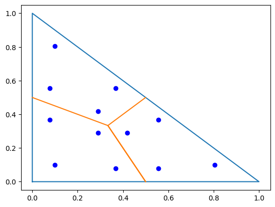
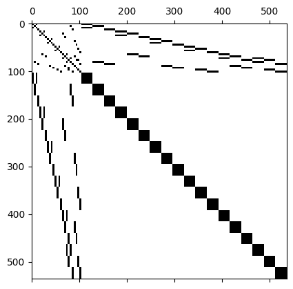
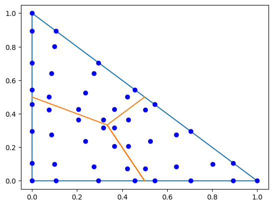
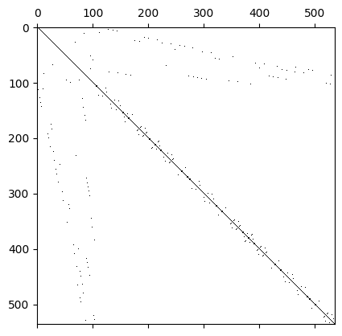

3.2. Mass Lumping for dual cell spaces#
by M. Wess, 2024#
This Notebook is part of the dualcellspaces documentation for the addon package implementing the Dual Cell method in NGSolve.
from ngsolve import *
import dualcellspaces as dcs
import matplotlib.pyplot as pl
import numpy as np
Dual cell integration rules#
Since our spaces consist of functions which are smooth (polynomials) on the single cells (instead of the whole elements) we cannot use the standard integration rules provided by NGSolve for computing itegrals.
The dualcellspaces package provides dualcellspaces.GetIntegrationRules, which returns rules which respect the cell structure. These are not the integration nodes used for generating the spaces!
irs = dcs.GetIntegrationRules(2)
print(irs)
for et in irs:
print(et)
print(irs[et])
pl.plot([0,1,0,0],[0,0,1,0]);
pl.plot([0,1/3,0.5,1/3,0.5],[0.5,1/3,0,1/3,0.5]);
trig_points = np.array(irs[TRIG].points)
px,py = trig_points[:,0],trig_points[:,1]
pl.plot(px,py,'ob');
{<ET.SEGM: 1>: <ngsolve.fem.IntegrationRule object at 0x726e566c7f30>, <ET.TRIG: 10>: <ngsolve.fem.IntegrationRule object at 0x726e566c7fb0>, <ET.TET: 20>: <ngsolve.fem.IntegrationRule object at 0x726e566c0070>}
ET.SEGM
locnr = -1: (0.105662, 0, 0), weight = 0.25
locnr = -1: (0.394338, 0, 0), weight = 0.25
locnr = -1: (0.894338, 0, 0), weight = 0.25
locnr = -1: (0.605662, 0, 0), weight = 0.25
ET.TRIG
locnr = -1: (0.803561, 0.0982194, 0), weight = 0.0536948
locnr = -1: (0.555556, 0.0778847, 0), weight = 0.0416667
locnr = -1: (0.555556, 0.36656, 0), weight = 0.0416667
locnr = -1: (0.418661, 0.290669, 0), weight = 0.0296385
locnr = -1: (0.0982194, 0.803561, 0), weight = 0.0536948
locnr = -1: (0.36656, 0.555556, 0), weight = 0.0416667
locnr = -1: (0.0778847, 0.555556, 0), weight = 0.0416667
locnr = -1: (0.290669, 0.418661, 0), weight = 0.0296385
locnr = -1: (0.0982194, 0.0982194, 0), weight = 0.0536948
locnr = -1: (0.0778847, 0.36656, 0), weight = 0.0416667
locnr = -1: (0.36656, 0.0778847, 0), weight = 0.0416667
locnr = -1: (0.290669, 0.290669, 0), weight = 0.0296385
ET.TET
locnr = -1: (0.725312, 0.0915628, 0.0915628), weight = 0.00999851
locnr = -1: (0.51153, 0.0733767, 0.0733767), weight = 0.00616387
locnr = -1: (0.51153, 0.0733767, 0.341717), weight = 0.00616387
locnr = -1: (0.391248, 0.0610607, 0.273846), weight = 0.00365801
locnr = -1: (0.51153, 0.341717, 0.0733767), weight = 0.00616387
locnr = -1: (0.391248, 0.273846, 0.0610607), weight = 0.00365801
locnr = -1: (0.391248, 0.273846, 0.273846), weight = 0.00365801
locnr = -1: (0.316355, 0.227882, 0.227882), weight = 0.0022025
locnr = -1: (0.0915628, 0.725312, 0.0915628), weight = 0.00999851
locnr = -1: (0.341717, 0.51153, 0.0733767), weight = 0.00616387
locnr = -1: (0.0733767, 0.51153, 0.0733767), weight = 0.00616387
locnr = -1: (0.273846, 0.391248, 0.0610607), weight = 0.00365801
locnr = -1: (0.0733767, 0.51153, 0.341717), weight = 0.00616387
locnr = -1: (0.273846, 0.391248, 0.273846), weight = 0.00365801
locnr = -1: (0.0610607, 0.391248, 0.273846), weight = 0.00365801
locnr = -1: (0.227882, 0.316355, 0.227882), weight = 0.0022025
locnr = -1: (0.0915628, 0.0915628, 0.725312), weight = 0.00999851
locnr = -1: (0.0733767, 0.341717, 0.51153), weight = 0.00616387
locnr = -1: (0.341717, 0.0733767, 0.51153), weight = 0.00616387
locnr = -1: (0.273846, 0.273846, 0.391248), weight = 0.00365801
locnr = -1: (0.0733767, 0.0733767, 0.51153), weight = 0.00616387
locnr = -1: (0.0610607, 0.273846, 0.391248), weight = 0.00365801
locnr = -1: (0.273846, 0.0610607, 0.391248), weight = 0.00365801
locnr = -1: (0.227882, 0.227882, 0.316355), weight = 0.0022025
locnr = -1: (0.0915628, 0.0915628, 0.0915628), weight = 0.00999851
locnr = -1: (0.0733767, 0.0733767, 0.341717), weight = 0.00616387
locnr = -1: (0.0733767, 0.341717, 0.0733767), weight = 0.00616387
locnr = -1: (0.0610607, 0.273846, 0.273846), weight = 0.00365801
locnr = -1: (0.341717, 0.0733767, 0.0733767), weight = 0.00616387
locnr = -1: (0.273846, 0.0610607, 0.273846), weight = 0.00365801
locnr = -1: (0.273846, 0.273846, 0.0610607), weight = 0.00365801
locnr = -1: (0.227882, 0.227882, 0.227882), weight = 0.0022025

Using these integration rules we may compute the exact mass matrices
order = 3
irs = dcs.GetIntegrationRules(2*order+2)
mesh = Mesh(unit_square.GenerateMesh(maxh=0.5))
fes = dcs.HCurlDualCells(mesh,order=order)
#fes = dcs.H1PrimalCells(mesh,order=order)
u,v = fes.TnT()
M = BilinearForm(u*v*dx(intrules=irs)).Assemble().mat
pl.spy(M.ToDense());

Mass lumping#
We want to explot the fact that we used nodal basis functions with respect to the nodes of Gauss-Radau integration rules. Thus we need to assemble the mass matrices approximated by these integration rules.
irs_fes = fes.GetIntegrationRules()
pl.plot([0,1,0,0],[0,0,1,0]);
pl.plot([0,1/3,0.5,1/3,0.5],[0.5,1/3,0,1/3,0.5]);
trig_points = np.array(irs_fes[TRIG].points)
px,py = trig_points[:,0],trig_points[:,1]
pl.plot(px,py,'ob');
M = BilinearForm(u*v*dx(intrules=irs_fes)).Assemble().mat
pl.figure()
pl.spy(M.ToDense());
M_diag = M.DeleteZeroElements(1e-10)
pl.figure()
pl.spy(M_diag.ToDense());
#pl.spy(M.ToDense());


Exercises:#
Explain why we need apply the function
DeleteZeroElements. Use the functionBaseMatrix.nzeto check the number of non-zero elements in the assembled matrixLook at the sparsity pattern of the exact and lumped mass matrix for the
HCurlDualCellsandH1DualCellsspaces.
Application of (inverse) lumped mass matrices#
Since the entries corresponding to basis functions of the dual elements are not stored together the block structure is less obvious here. Exploiting this block structure is implemented in the finite element spaces. The mass matrices may be accessed via FESpace.Mass:
from time import time
order = 3
irs = dcs.GetIntegrationRules(2*order+2)
mesh = Mesh(unit_cube.GenerateMesh(maxh=0.3))
fes = dcs.HCurlDualCells(mesh,order=order)
print("ndof = ",fes.ndof)
irs_fes = fes.GetIntegrationRules()
u,v = fes.TnT()
with TaskManager():
now = time()
M_exact = BilinearForm(u*v*dx(intrules=irs)).Assemble().mat
exacttime = time()-now
now = time()
M_supersparse = fes.Mass()
stime = time()-now
print('#### assembling ####')
print('exact: {}s'.format(exacttime))
print('supersparse: {}s'.format(stime))
now = time()
M_exact_inv = M_exact.Inverse(inverse='sparsecholesky')
exacttime = time()-now
now = time()
with TaskManager():
M_supersparse_inv = M_supersparse.Inverse()
stime = time()-now
print('#### factorization ####')
print('exact: {}s'.format(exacttime))
print('supersparse: {}s'.format(stime))
n = 10
tmp = M_exact.CreateVector()
tmp.SetRandom()
tmp2 = M_exact.CreateVector()
now = time()
for i in range(n):
tmp2.data = M_exact_inv * tmp
exacttime = time()-now
now = time()
for i in range(n):
tmp2.data = M_supersparse_inv * tmp
stime = time()-now
print('#### application ####')
print('exact: {}s'.format(exacttime))
print('supersparse: {}s'.format(stime))
ndof = 126200
#### assembling ####
exact: 8.249957084655762s
supersparse: 0.5910699367523193s
#### factorization ####
exact: 30.446457624435425s
supersparse: 0.0343320369720459s
#### application ####
exact: 0.9989330768585205s
supersparse: 0.0072171688079833984s